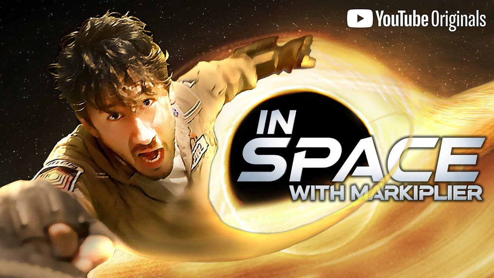

How To Date a Visual Novel
By Tobi Tobar
Abstract
WIP
Keywords
WIP
Disciplines
WIP
Article Body
Multi User Domains, or MUDs, are a real time synchronous, text-based environment used by multiple users on the internet. These were originally made for Role-Playing based games such as Dungeons & Dragons. These soon evolved into Dungeon Crawling-like RPGs. The Dungeon Crawling-like games were all text adventures, the scenes were described to you through text, and the player would input their actions through text. These soon evolved and branched off into Visual Novels. Visual Novels are interactive, simulator-like games that consist of visuals and multiple choice adventures. These originated in Japan and have become popular world-wide. Although MUDs exist in the present day, I believe Visual Novels are to be held in a higher regard.
Visual Novels come in different categories including: Adventure, Horror, and the ever so popular Dating Sims/Romance. Majority of any other categories falls beneath the mechanics of the game such as shooter or point and click. All of these Visual Novels share a common trait: Lots and lots of narrative and character dialogue. Most of these are formatted with an opaque or solid square with text in front of the character. These games bring complex stories, but as Klotz says “complexity alone is not the measure of what is deemed literature; enjoyment and depth are equally important.” For this reason, I believe expanding the genres of Visual Novels will help youth enjoy reading and equally aesthetic visuals. As a child I’ve had trouble reading blocks and blocks of text within a book, of course I would rather read comic books or even manga. I’m a natural visual learner, and having the chance to see the accurate representation of the characters and settings gave me the ease to see the scene in motion. Leading Visual Novels into the realm of the younger generation will encourage them to read and learn through playing the game. There are a few out there that could fit the category for youth to older teens.
The second most popular Visual Novels are adventure novels. These tend to have either point and click or turn-based fighting. The more popular ones that I can think of are Phoenix Wright: Ace Attorney and the Persona series, but I’ll be talking mostly about Persona 5. Phoenix Wright: Ace Attorney is a point and click visual novel that brings the player a chance to investigate crimes and bring them to court to find and accuse the criminals of each chapter. Persona 5 is an adventure, turn-based rpg novel. It has aspects of romance, though it isn’t forced or necessary to continue the story, taken more as extra content. You play as a young boy who gains the ability to travel to another world and see the true personalities of the villains. Through the game, you gain help and purify these villains to repent their sins. These stories may have multiple story lines and endings, but they have been compressed and made into manga series to let those who cannot afford a console itself for the games, they can enjoy it by checking the books out in the library. I know it loses the purpose that games can be literature, however the manga usually doesn’t cover the many options given within the game.
Another medium that has started to rise are Interactive Films. Although these lose the aspect of literature from Visual Novels, it brings the player a chance to drive the direction of a film series. An excellent example are Markiplier’s Choose your own adventures. The ones that have stuck to me personally are: A Date with Markiplier, A Heist with Markiplier, and his newest one, In Space with Markiplier. These are the main set of series that he’s worked hard on, each having different paths decided by your choices. His newest series, In Space with Markiplier, has a large cast of people set in space and the whole series is free to watch and play along! Another interactive film would be Minecraft: Story Mode.Telltale Games has made some of the best Visual Novel games, though they are on the edge of being Interactive Film-like games and Minecraft: Story Mode was one of them. However Telltale Games fell off the industry in 2018 due to their games not selling so well anymore. That left Minecraft: Story Mode at only two seasons and was no longer continued. It’s still available on Netflix if you’d like to experience a nostalgic story for many.
Back to Visual Novels, the most popular type are Dating Sims. Although this type of genre has been around since the 1980s, their popularity skyrocketed in 1994. One of the best Dating Sims that still gets talked about today is called Clannad made by Key in April 28, 2004. This game brings many choices of girls to date, and due to the time it was made, there’s even a short gay route though it’s viewed as a bad ending. Again it was the times. The story begins with a boy named Tomoya Okazaki who’s starting a brand new school year and meets one of the main girls, Nagisa Furukawa. She wants to join the Drama Club, however, it was disbanded after previous members had graduated. She makes it her goal to reform the club, and that’s how Tomoya gets to meet the majority of the girls. Although he has options on who to date, his main love interest is Nagisa. They have an after story that will rip your heart apart. This game got an anime adaption as well, though it does lose a lot of the story due to concentrating on Tomoya and Nagisa’s relationship. If you do not have the patience to play the game on your own, Clannad’s anime makes a second best way to experience the story.
Dating sims have come a long way, as Partis states: “Traditionally, most dating games were created with a simple goal in mind: fulfilling a fantasy…But in recent years, dating simulators have evolved to tell more intricate stories, and not fantasies about love and sex. They're about pain, loss, emotional wellbeing, and the darker side of relationships.” With the recent releases of modern day dating sims, They have broadened their horizons and have made LGBTQ+ choices/games aimed for the community. And now most include nonhuman characters such as monsters, demons, and even birds!?! And all of these have charming and/or storylines and interactions between all the characters. Some of the more popular ones today are Crush Crush/Blush Blush, Dream Daddy, Obey Me, Doki Doki Literature Club (DDLC), and Hatoful Boyfriend. Though not all have similar gameplay and some have even darker themes than they reveal to be. DDLC by Team Salvato was released on September 22, 2017 and gave the impression of being a very cutesy game about joining a poetry class and meeting a bunch of cute girls. However, when you start the game, it gives a very odd warning that this game isn’t for the faint of heart. This game goes beyond meta, or beyond the game, and reveals its true intentions per gameplay. Blush Blush made by Sad Panda Studios was released on April 4, 2019. This cute game is about you working at a zoo and handing out bottles of water, however it isn’t water! It’s a magical potion that turns all the guests into animals. You have to find these cute animal boys and romance all to help them turn back into humans. This one is highly aimed towards the gay community, however it does have an option to present yourself as female in the Marshmellow (that’s you!) customization. The most interesting one has to be Hatoful Boyfriend, it is a dating sim where you date Pigeons. Released in July 31, 2011 by Epic Games, enter a world where you’re a human in a pigeon school and you can try and woo one of these pigeons, however there are other birds you can woo as well. This was an interesting concept to think of and I rather enjoyed the storyline about the perspective of these birds as if you were in a magical world of pigeons. As McDevvit states: “There really is a dating sim for everyone. Literally just scroll through itch.io or Steam to see if something interests you.”
Although there are still a lot of negative connotations about dating sims, mainly due to them being a simulation to going on virtual dates rather than real ones, I think people shouldn’t be thinking too hard about it and just enjoy the game for what it is. I myself have made a miniature dating sim where you date parrots, though it hasn’t been finalized, I’m proud to think that this is my first step to making my own dating sim someday. During my game design class, I’ve had classmates make a dating sim as well (you can check it out below the references!) and they’ve got plans to continue it! As McDevitt States: “The fact that dating sims tend to be visual novels, which require fewer assets and gameplay development, means that lots of people are making their own, which is why there is such a large variety of stories being told.” I believe that these Visual Novels bring a lot of learning opportunities for the educational and gaming community, allowing them to become teaching tools will make things easier for people to learn. From learning how to program a game to making Visual Novels for the youth to learn how to read will become true in the near future.
-Tobi Tobar. May 22, 2022
References
Klotz, Harper. “The Value of the Visual Novel as Literature.” The Michigan Daily, 3 June 2021, https://www.ubu.com/papers/perec_infraordinary.html
McDevitt, Sinéad. “Level up!: Dating Sims.” The Pitt News, 14 Feb. 2022, https://pittnews.com/article/171242/blogs/level-up-dating-sims/
Partis, Danielle. “The Evolution of Dating Sims: With Great Romance Comes Great Responsibility.” GamesIndustry.biz, GamesIndustry.biz, 21 Sept. 2021, https://www.gamesindustry.biz/articles/2021-09-17-the-evolution-of-dating-sims-with-great-romance-comes-great-responsibility
Check out CHECKMATE!! The Dating Sim made by my classmate!!
Additional Images

Phoenix Wright: Ace Attorney Trilogy by Campcom, April 9, 2019

Persona 5 by Atlus, September 15, 2016, Year

In Space with Markiplier by Markiplier, April 4, 2022

Clannad by Key, April 28, 2004

Doki Doki Literature Club by Team Salvato, September 22, 2017